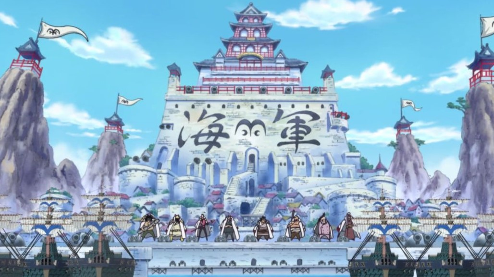

TIPOS DE AKUMA NO MI:

Paramecia
As frutas do tipo Paramecia permitem ao usuário manipular a matéria de forma única, criando e controlando objetos e entidades físicas.

Logia
As frutas do tipo Logia permitem ao usuário controlar e se transformar em elementos da natureza, tornando seu corpo no próprio elemento.

Zoan
As frutas do tipo Zoan permitem o usuário se transformar em animais ou assumir formas híbridas, combinando características humanas e animais.
TIPOS DE HAKI:

Observação
Permite ao usuário sentir a presença, as emoções e a intenção de outras pessoas, além de prever movimentos e antecipar ataques durante um combate.

Armamento
Permite ao usuário revestir seu corpo ou objetos com uma armadura invisível, aumentando o poder de ataque e defesa e permitindo atingir usuários de Logia.

REI
Permite ao usuário liberar sua força de vontade para dominar a presença de outras pessoas, fazendo indivíduos mais fraco desmaiarem com a sua determinação.
YONKOUS:


Entre os piratas mais famosos e poderosos dos mares estão os Yonkous, conhecidos como os Quatro Imperadores. Entre eles estão Shanks, capitão dos Piratas do Ruivo; Marshall D. Teach, o temido Barba Negra; Monkey D. Luffy, capitão dos Mugiwaras; e Buggy, líder da Cross Guild. Cada um possui grande influência e representa uma das maiores forças da pirataria.

Governo Mundial
O Governo Mundial é a organização política que governa grande parte do mundo de One Piece. Apesar de transmitir uma imagem de autoridade e ordem, esconde inúmeros segredos, mistérios e verdades que poucos conhecem.

Marinha
A Marinha é a força militar do governo mundial, responsável por combater a pirataria e manter a ordem nos mares. Sua missão deveria ser proteger a população e garantir a justiça, mas nem sempre seus integrantes agem de forma justa, pois alguns seguem interesses próprios e ordens questionáveis.